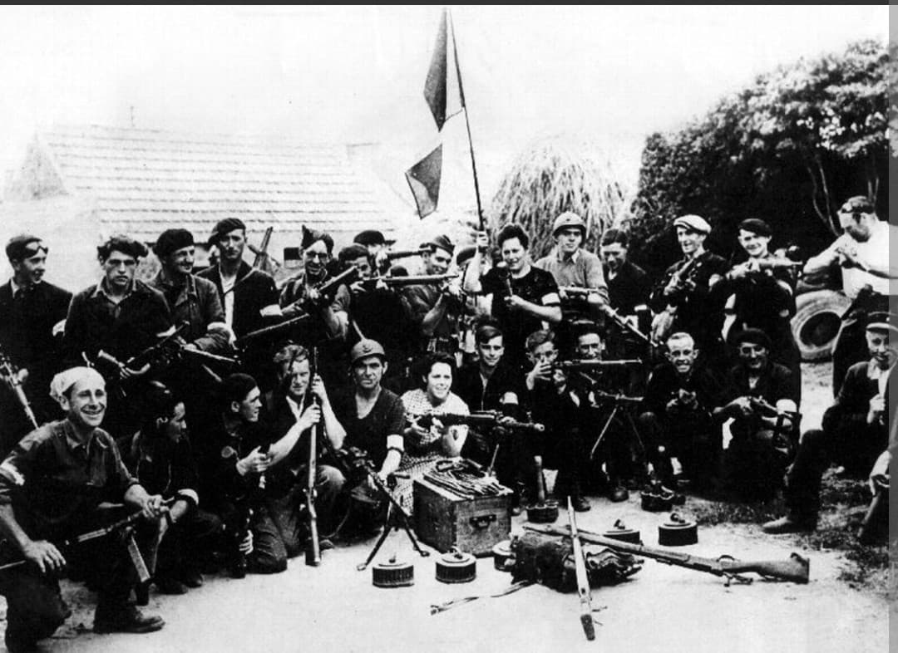
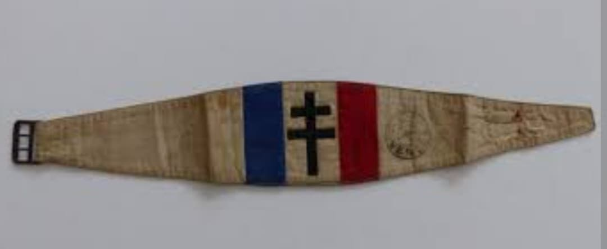
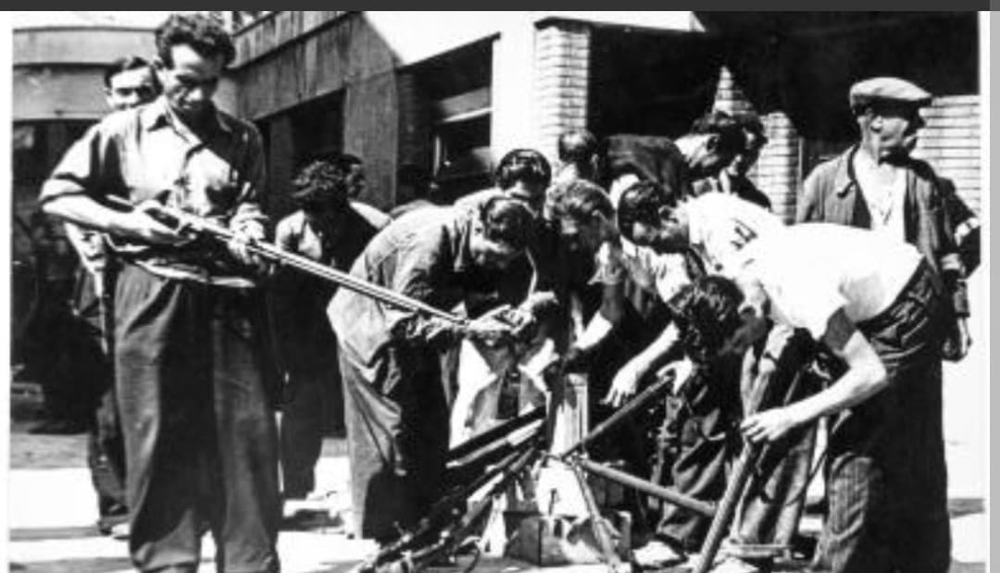

L'armée des ombres : du renseignement et du sabotage clandestin aux insurrections populaires et à la libération des villes de France

Les Forces françaises de l'Intérieur (FFI) regroupent l'ensemble des formations militaires clandestines de la Résistance intérieure française qui ont combattu l'occupant nazi et le régime de Vichy à partir de 1944.
Nées de l'unification progressive des différents réseaux et mouvements sous l'impulsion de Jean Moulin et du Conseil National de la Résistance (CNR), les FFI ont constitué, selon l'expression célèbre du général de Gaulle, « l'armée de la nuit » devenue au moment du Débarquement une armée de libération redoutable.
Dès l'été 1940, des actes de résistance isolés se multiplient à travers le pays. Peu à peu, de grandes structures armées s'organisent (comme l'Armée Secrète, les Francs-Tireurs et Partisans - FTP, ou l'Organisation de Résistance de l'Armée - ORA). En février 1944, l'appellation unique de **Forces françaises de l'Intérieur** est officialisée sous le commandement suprême du général **Marie-Pierre Kœnig**.
L'insigne et les symboles des FFI s'articulent autour de la croix de Lorraine et du brassard tricolore frappé des initiales FFI, devenu l'attribut distinctif des combattants reconnus comme belligérants réguliers par les Alliés.

À l'approche du débarquement de Normandie, les FFI jouent un rôle stratégique majeur en exécutant les ordres de sabotage transmis par la BBC (« Les sanglots longs des violons de l'automne... »).
À travers le **Plan Vert** (sabotage des voies ferrées), le **Plan Violet** (coupure des lignes téléphoniques et télégraphiques) et le **Plan Bleu** (neutralisation des réseaux électriques), les résistants isolent les forces allemandes et retardent considérablement l'acheminement des divisions blindées de renfort vers les têtes de pont normandes.

Durant l'été 1944, les FFI mènent des insurrections armées décisives, libérant par leurs propres moyens de vastes territoires (maquis du Vercors, de Haute-Savoie, du Limousin) et participant activement à la libération de grandes villes, dont Paris, Lyon, Marseille et les poches de l'Atlantique.
À la Libération, par le processus de l'amalgame conduit par le général de Lattre de Tassigny, des dizaines de milliers de combattants FFI s'engagent dans les unités régulières de la 1ère Armée française et de la 2e DB, constituant une force de frappe décisive pour la campagne d'Allemagne en 1945.
Page du Musée HOP WW2 – Section Unités & Divisions